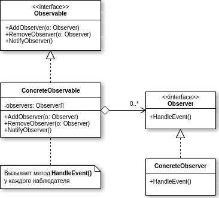

Observer (Наблюдатель)

Паттерн проектирования Observer
Описание Observer
Наблюдатель (англ. Observer) — поведенческий шаблон проектирования. Также известен как «подчинённые» (Dependents).
Создает механизм у класса, который позволяет получать экземпляру объекта этого класса оповещения от других объектов об изменении их состояния, тем самым наблюдая за ними.
Шаблон «наблюдатель» применяется в тех случаях, когда система обладает следующими свойствами:
- существует, как минимум, один объект, рассылающий сообщения
- имеется не менее одного получателя сообщений, причём их количество и состав могут изменяться во время работы приложения
- нет надобности очень сильно связывать взаимодействующие объекты, что полезно для повторного использования.
Данный шаблон часто применяют в ситуациях, в которых отправителя сообщений не интересует, что делают получатели с предоставленной им информацией.